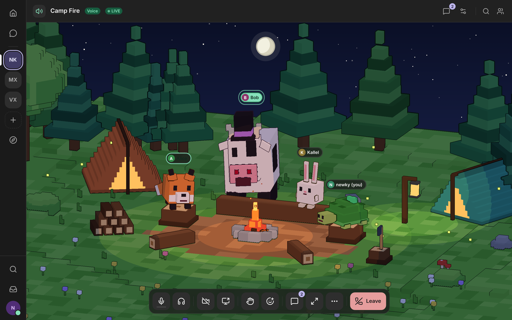
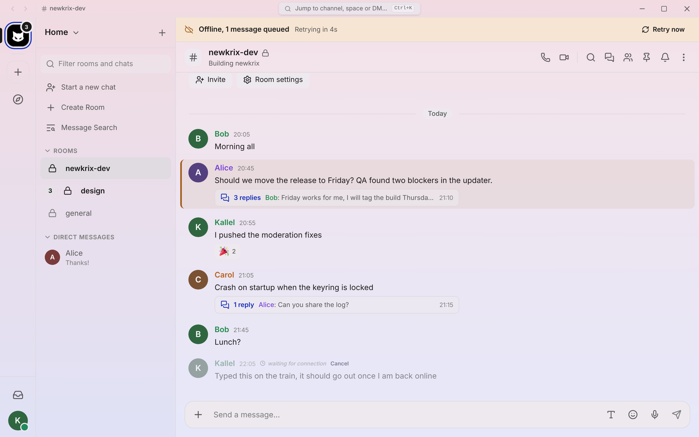
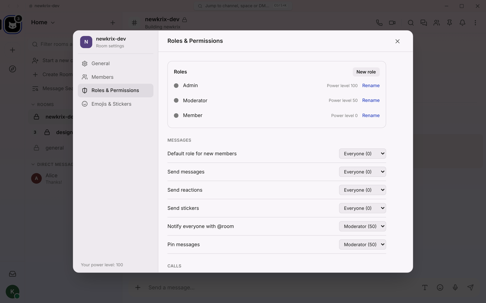
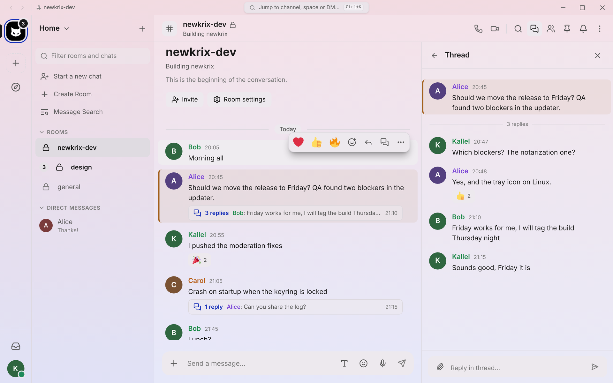

A Matrix client that feels light.
Newkrix is a native desktop client for Matrix, built with Rust and Tauri. Fast to open, kind to your battery, and yours to theme.
Windows and macOS builds on GitHub Releases. Free to use, works with any Matrix homeserver.Things we think you'll miss elsewhere
Newkrix covers the everyday Matrix basics, then goes its own way in a few places. These are the features we're proudest of.
A voxel camp fire for every call
Instead of a grid of tiles, a voice room puts everyone around a camp fire as a little animal. Pick your look and it syncs across your devices and to everyone in the call.
- Native MatrixRTC calls with end-to-end encrypted media
- Interoperates with Cinny, Element Call and Element X
- Flat view and pop-out window when you want a classic layout

Write offline. It sends when you're back.
Lose your connection mid-thought and nothing is lost. Messages, attachments, reactions, edits and deletes queue up and go out in order, even after a restart, with a bar that tells you what's waiting.
- Retries reuse the transaction id, so nothing is sent twice
- Encrypted on-disk message cache: opened rooms stay readable offline
- Threads and their latest replies are cached too

Your colours, not ours
Choose from 20+ gradient presets, or build your own gradient with up to five colours. Light, dark and true-black OLED looks, six accent colours, an IRC layout, and custom CSS that always wins.
Try it: click a theme and the whole site changes.
Real room administration, built in
Roles and power levels, a minimum role for every action, join rules including knock and restricted, kick, ban and mute with reasons, a banned list with unban, and the same safety warnings Element gives before you demote yourself.

Threads that open instantly
A thread side panel, summaries on the root message, and a per-room threads list with unread tracking. Cached locally, so they open instantly and work offline.

The full desktop kit
Not just novelties: a complete client you can live in.
Real end-to-end encryption
Cross-signing, emoji and QR verification, key backup, recovery key, key export and import, and trust shields.
One window per account
Add as many accounts as you like. Each keeps its own keys, cache and notifications, and switching is instant.
Search that includes encrypted rooms
One room or all rooms, with sender, date and media filters, merging the local cache with the server.
Notifications you control
Per-room modes, per-account channels, an inbox for invites and mentions, and quick reply from the desktop toast.
Rich messaging
Markdown with live preview, code highlighting, math, replies, edits, pins, reactions, stickers and custom emoji packs.
Stealth mode
Hide typing notices and read receipts in one switch.
Rust core
Matrix and crypto logic live in a reusable Rust core, so the engine is the same whatever the UI on top.
Your language
English, Brazilian Portuguese and Latin American Spanish.
Where Newkrix is today
An actively developed project
- Voice calls are verified on macOS and Windows 11. Linux has not been tested yet.
- Screen sharing and camera are still being verified on Windows and Linux.
- Some features, like on-device search of never-opened encrypted rooms, are still in progress.
- Each release lists what changed on the releases page.
Get Newkrix
Installers for Windows and macOS (Apple Silicon), with signed automatic updates inside the app.